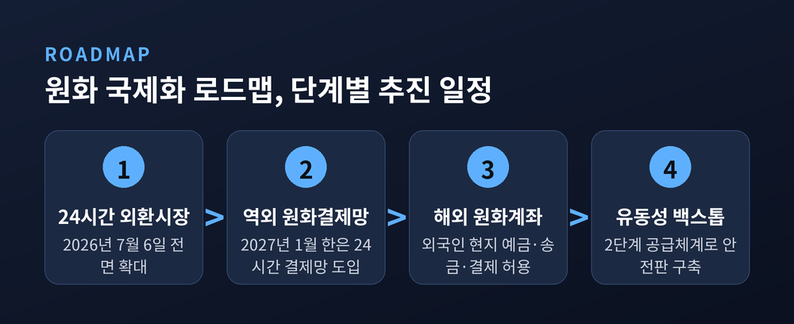
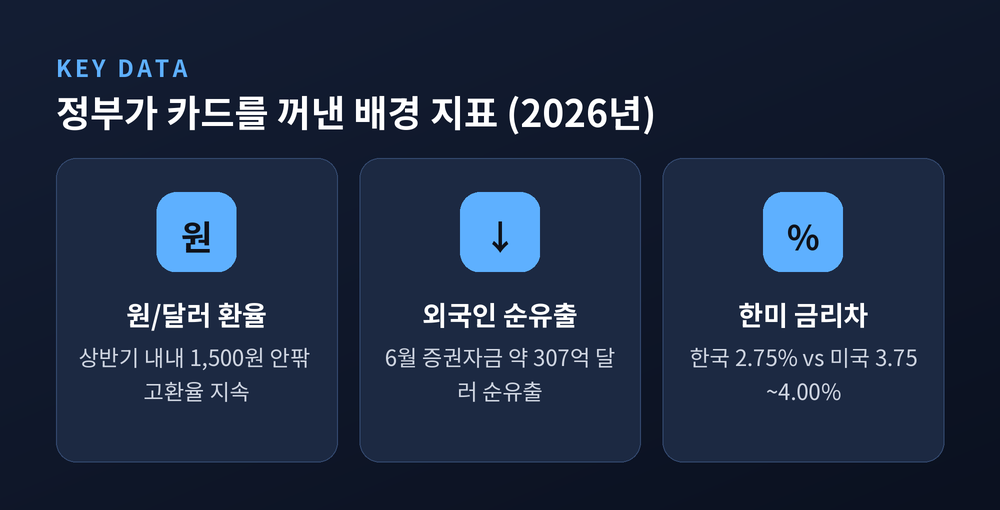
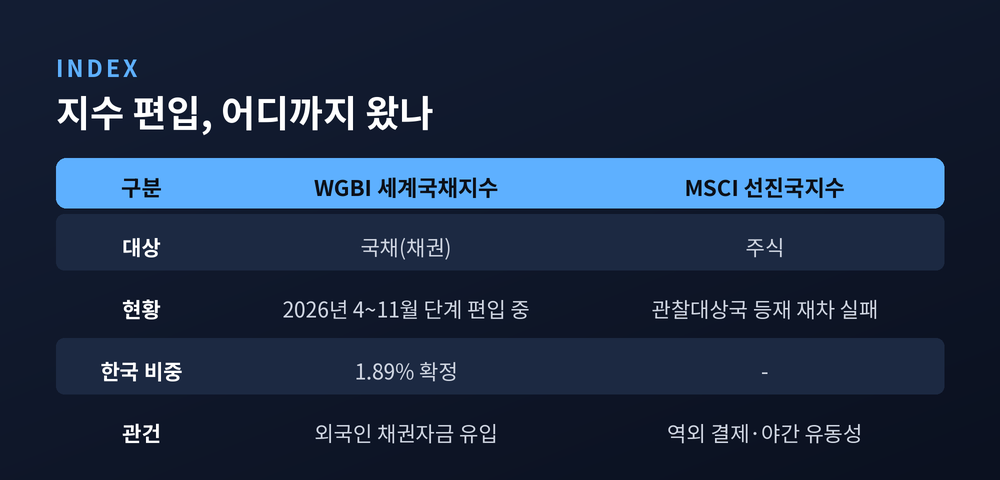
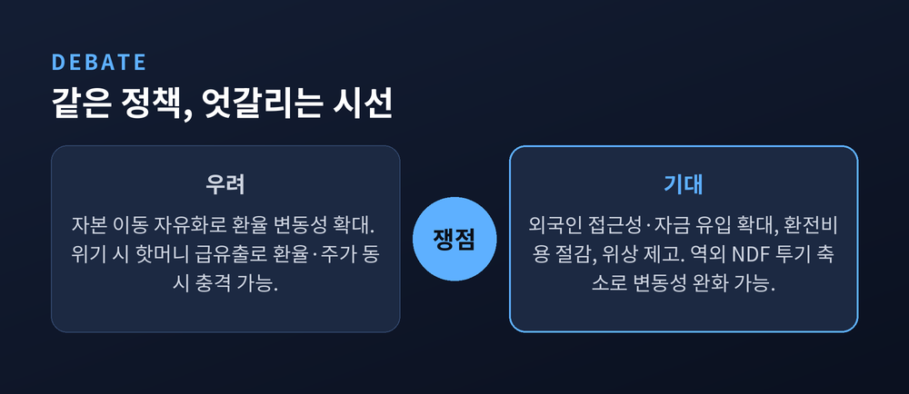
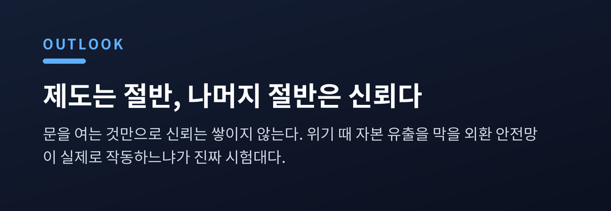

원화 국제화 로드맵, 환율 1500원 시대 정부의 승부수와 증시 영향
이번 글에서는 정부가 2026년 7월 내놓은 '원화 국제화 로드맵'이 무엇이고, 왜 지금 이 카드를 꺼냈는지 정리해 보겠습니다. 환율과 주식시장에 미칠 파장, 그리고 찬반 쟁점까지 차분히 짚어보려 합니다.
이 글은 정보 제공을 목적으로 한 해설이며, 특정 종목이나 투자 상품을 권유하는 글이 아닙니다.

무슨 일이 있었나
정부가 원화의 성격을 바꾸려 하고 있습니다.
2026년 7월 19일, 기획재정부와 한국은행 등은 「원화 국제화 로드맵」을 공식 발표했습니다. 핵심은 한 문장으로 요약됩니다. 지금까지 '제한통화'였던 원화를, 해외에서도 자유롭게 사고팔 수 있는 '자유교환성 통화'로 바꾸겠다는 것입니다.
예전엔 원화를 외국에서 자유롭게 거래하거나 결제에 쓰기 어려웠습니다. 지금은 그 빗장을 단계적으로 풀겠다는 방향으로 돌아섰습니다.
로드맵은 네 개의 축으로 짜여 있습니다. 인프라·제도 개선, 원화 거래 수요 확충, 원화 유동성 공급 확대, 그리고 다층적 리스크 관리체계 구축입니다. 추상적으로 들리지만, 실제 조치는 꽤 구체적입니다.
먼저 2026년 7월 6일부터 국내 외환시장이 24시간 운영 체제로 넓어졌습니다. 이어 2027년 1월부터는 한국은행에 24시간 돌아가는 '역외 원화결제망'을 두어, 외국인끼리도 원화로 주고받을 수 있게 할 계획입니다. 외국인이 등록된 해외 금융기관을 통해 현지에서 원화계좌를 만들고 예금·송금·결제를 하는 길도 열립니다.
'제한통화'라는 말이 조금 낯설 수 있습니다. 쉽게 말하면, 원화는 그동안 한국 안에서는 자유롭게 쓰이지만 국경을 넘으면 손발이 묶이는 돈이었습니다. 달러나 엔화, 유로처럼 해외에서 곧바로 결제하거나 예치하기가 까다로웠던 것입니다. 로드맵은 이 벽을 낮추는 작업입니다.
유동성 공급도 두 단계로 설계했습니다. 1단계에서는 외국환은행이 역외결제시스템에 참여한 외국 금융기관에 원화를 원활히 공급하고, 2단계에서는 한국은행이 추가로 유동성을 댈지 검토하는 공공 백스톱을 둡니다. 문을 여는 김에 안전판도 함께 마련해 두겠다는 취지로 읽힙니다.

왜 지금 이 카드를 꺼냈나
배경에는 올해 상반기의 불안한 지표들이 있습니다.
원/달러 환율은 상반기 내내 1,500원 안팎에서 좀처럼 내려오지 못했습니다. 7월 들어 미국 고용지표가 예상을 밑돌며 달러 강세가 누그러졌지만, 여전히 1,500원대 초반입니다.
외국인 자금 이탈도 뼈아팠습니다. 한국은행에 따르면 2026년 6월 한 달간 외국인 증권투자자금은 약 307억 달러가 순유출됐고, 이 가운데 주식자금만 약 324억 달러가 빠져나갔습니다. 한은은 글로벌 인공지능 투자에 대한 경계심과 그동안 오른 주식의 비중 조절이 겹친 결과로 풀이했습니다.
환율이 1,500원 언저리에 머문다는 것은 가벼운 신호가 아닙니다. 수입 물가를 밀어 올리고, 해외에 투자한 자금의 환차손 부담을 키우며, 외국인 눈에는 '환율이 더 밀릴지 모른다'는 불안으로 비칩니다. 그 불안이 자금 이탈을 부르고, 이탈이 다시 환율을 밀어 올리는 악순환의 고리가 만들어질 수 있습니다.
금리 여건도 우호적이지 않습니다. 한국은행은 7월 16일 기준금리를 0.25%포인트 올려 2.75%로 조정했습니다. 3년 6개월 만의 인상입니다. 그럼에도 미국 연준의 기준금리(3.75~4.00% 안팎)보다는 여전히 낮아, 한미 금리 역전 상태는 이어집니다. 금리가 높은 쪽으로 돈이 흐르는 힘을 제도로 상쇄해 보려는 시도인 셈입니다.

왜 중요한가 — 지수 편입과 '코리아 디스카운트'
이 로드맵은 단순히 환율을 잡으려는 응급 처방이 아닙니다. 더 큰 목표가 뒤에 있습니다.
한국 국채는 2026년 4월부터 11월까지 여덟 달에 걸쳐 세계국채지수(WGBI)에 단계적으로 편입되고 있습니다. FTSE가 확정한 한국 비중은 1.89%입니다. 채권시장으로 들어오는 외국인 자금이 외환과 금리를 안정시키는 데 도움이 될 수 있다는 기대가 깔려 있습니다.
반면 주식시장은 아쉬움을 남겼습니다. 한국 증시는 올해도 MSCI 선진국지수 편입을 위한 관찰대상국 등재에 실패했습니다. 걸림돌로 지목된 것이 바로 '원화의 역외 결제 불가'와 '야간 외환시장의 유동성 부족'이었습니다. 원화 국제화는 정확히 이 두 지점을 겨냥합니다.
정리하면, 원화 국제화는 코리아 디스카운트를 풀고 외국인 자금이 안정적으로 들어올 토대를 넓히려는 구조적 포석에 가깝습니다.

기대와 우려, 나뉘는 시선
같은 정책을 두고 평가는 엇갈립니다.
기대하는 쪽은 이렇게 봅니다. 외국인의 투자 접근성이 넓어지고, 기업의 환전 비용이 줄며, 한국 금융시장의 위상이 올라간다는 것입니다. 달러에 대한 의존도가 낮아지면 위기 때 취약성도 줄어듭니다. 흥미로운 반론도 있습니다. 원화가 국제화되면 투기 성향이 강한 역외 비거주자의 NDF(차액결제선물환) 거래가 줄어, 오히려 환율 변동성이 낮아질 수 있다는 견해입니다.
우려하는 쪽의 논리도 만만치 않습니다. 자본이 자유롭게 드나드는 만큼 환율 변동성이 커질 수 있고, 위기 국면에서 이른바 '핫머니'가 한꺼번에 빠져나가면 환율과 주가가 동시에 흔들릴 수 있습니다. 정부가 로드맵에 '다층적 리스크 관리체계'와 외환 안전망(백스톱)을 굳이 넣어둔 이유이기도 합니다.
그동안 원화 국제화가 더뎠던 것도 이런 걱정 때문이었습니다. 국내 자본시장이 충분히 깊지 않은 상태에서 빗장을 먼저 풀면, 작은 충격에도 시장이 크게 출렁일 수 있다는 우려였습니다. 다만 최근 학계에서는 "그 우려가 다소 과도하다"는 평가로 무게가 옮겨가는 흐름이 읽힙니다. 이미 WGBI 편입이라는 우호적 여건이 만들어진 지금이 오히려 기회라는 시각입니다.

앞으로의 관전 포인트
단기적으로는 2027년 1월의 역외 원화결제망과 24시간 외환시장이 자리를 잡느냐가 첫 시험대입니다. 야간 유동성과 역외 결제라는 두 걸림돌이 풀리면, MSCI 선진국 편입 재도전의 명분도 단단해집니다.
중기적으로는 WGBI 편입 자금(기대치로 90조 원가량이 거론됩니다)이 실제로 외환·금리 안정에 기여하는지가 관건입니다. 다만 제도만 갖춘다고 신뢰가 저절로 쌓이지는 않습니다. 위기가 왔을 때 자본 유출을 막아낼 외환 안전망이 실제로 작동하는지가 결국 진짜 평가를 받게 될 것입니다.

끝으로 한 가지만 덧붙이겠습니다.
원화 국제화는 빗장을 여는 일입니다. 문을 열면 사람이 드나들지만, 바람도 함께 들어옵니다.
"제도는 절반이고, 나머지 절반은 신뢰다."
문을 연 뒤에도 조용히 머물게 만드는 힘이 있느냐고 묻는다면, 그 답은 앞으로의 몇 년이 말해줄 것이라고 생각합니다.